Authors: Honghao Lin, David P. Woodruff, Yuan Deng, Jieming Mao, Song Zuo, Vahab Mirrokni · DeepMind, Google
Published: 2026-09-14 · Category: cs.AI
Citation: arXiv:2609.15983v1 · PDF · abstract page
Stellar Colosseum Achieves 98.2% Success Rate on Competitive Programming via Multi-Agent Proof Decomposition
1. What It Is & Why It Matters
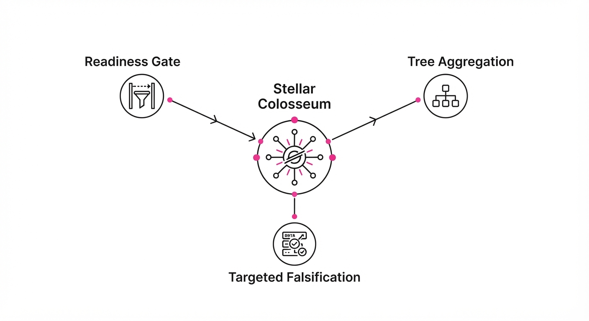
Modern Large Language Models (LLMs) operate on a "next-token" prediction paradigm. While this makes them exceptional at mimicking human prose or writing boilerplate code, it causes them to crumble under the weight of long-horizon research problems. In complex mathematical or theoretical computer science (TCS) tasks, a single logical lapse at step 4 of a 20-step proof cascades into a total failure. LLMs lack the strategic foresight to backtrack, often "hallucinating" their way into a dead-end proof tree.
Stellar Colosseum is a model-agnostic orchestration harness that treats research as a multi-stage, collaborative process rather than a linear generation task. It replaces the "stream of consciousness" approach with a modular, verifiable pipeline. By treating a proof as a set of interdependent, high-stakes sub-tasks, the system uses a "Colosseum" of specialized agents to attack, critique, and refine these components in parallel.
- The Problem: LLMs lack strategic persistence. They are prone to "greedy" reasoning, where they commit to a suboptimal path early and lack the structural awareness to recover.
- The Core Idea: Implement a "Readiness Gate" to prevent premature proof generation, "Targeted Falsification" to simulate adversarial peer review, and "Overlapping Random-Sample Tree Aggregation" to synthesize the most robust logical fragments.
- Headline Result: Achieved a 98.2% success rate (218/222) on high-difficulty Codeforces competitive programming problems and a 71.0% accuracy rate on the rigorous TCS-Bench (a dataset of research-level proofs).
🏭 Industry Angle: This architecture is a force multiplier for R&D labs, quantitative finance firms, and cybersecurity teams. It automates the formal verification of complex algorithms, proprietary trading logic, and smart contract safety, shifting the burden from human manual review to high-speed, automated adversarial testing.
2. How It Works
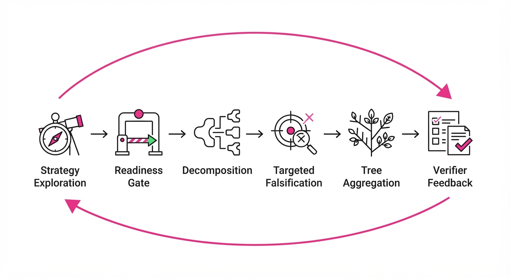
The architecture functions as a recursive refinery, cycling through six distinct, high-fidelity stages:
- Strategy Exploration: Rather than jumping to code, the system generates 5–10 high-level "proof sketches." These are skeletal outlines of the logical path, allowing the system to evaluate the feasibility of multiple approaches before committing compute.
- Readiness Gate: A heuristic filter that evaluates the "logical maturity" of a strategy. If the strategy lacks defined base cases or contains logical gaps, the gate rejects it, forcing the model to iterate on the plan rather than the implementation.
- Decomposition: Once a strategy is approved, it is broken into discrete, section-level subproblems. Each subproblem is assigned a clear input/output contract, ensuring that modules remain decoupled.
- Targeted Falsification: An adversarial agent—the "Devil’s Advocate"—is tasked with finding a counter-example for each candidate fragment. It specifically targets boundary conditions and edge cases that the primary generator might have overlooked.
- Random-Sample Tree Aggregation: Instead of picking the "best" path, the system aggregates successful nodes from a tree of attempts. If version A of Step 1 is strong but version B of Step 2 is better, the system performs a "surgical merge" of these components.
- Verifier Feedback Loop: Findings from formal verifiers (e.g., Lean or Z3) are routed back to the specific sub-module responsible for the error, creating a closed-loop learning environment.
# Pseudocode for the Colosseum Workflow
def solve_research_problem(problem):
# Phase 1: Strategic Planning
strategies = generate_strategies(problem, n=5)
# Phase 2: Orchestration
for s in strategies:
if readiness_gate(s): # Prevents premature, low-quality generation
subproblems = decompose(s)
candidates = [solve(sub) for sub in subproblems]
# Phase 3: Adversarial Refinement
critique = adversarial_attack(candidates)
if critique.is_fatal:
continue
# Phase 4: Synthesis
return aggregate_tree(candidates, critique)3. Core Idea & Key Numbers
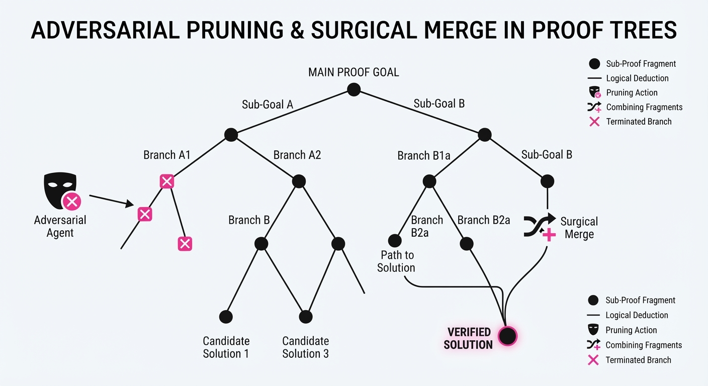
The mechanism relies on Overlapping Random-Sample Tree Aggregation, which optimizes the search space by maximizing the probability of a valid proof path P given sub-proofs si. We define the optimal proof P^* as:
P^* = argmaxP ∑i=1n wi · Verify(si)
Where wi represents the confidence score of the i-th sub-proof and Verify(si) is a binary indicator (1 if the sub-proof passes formal verification, 0 otherwise).
💡 Intuition: Think of this as a "committee of experts" where each expert is only responsible for one chapter of a book. They write their chapters, critique each other’s work, and a final editor stitches the most robust pieces together. 🔍 Example: If a proof requires 3 steps (Initialization, Transformation, Verification), the system generates 3 variations of each. If Variation 2 of the Transformation step fails the formal verification check, the system doesn't discard the whole proof. It only re-runs the Transformation step, keeping the successful Initialization and Verification steps, drastically reducing compute overhead.
4. Analogy
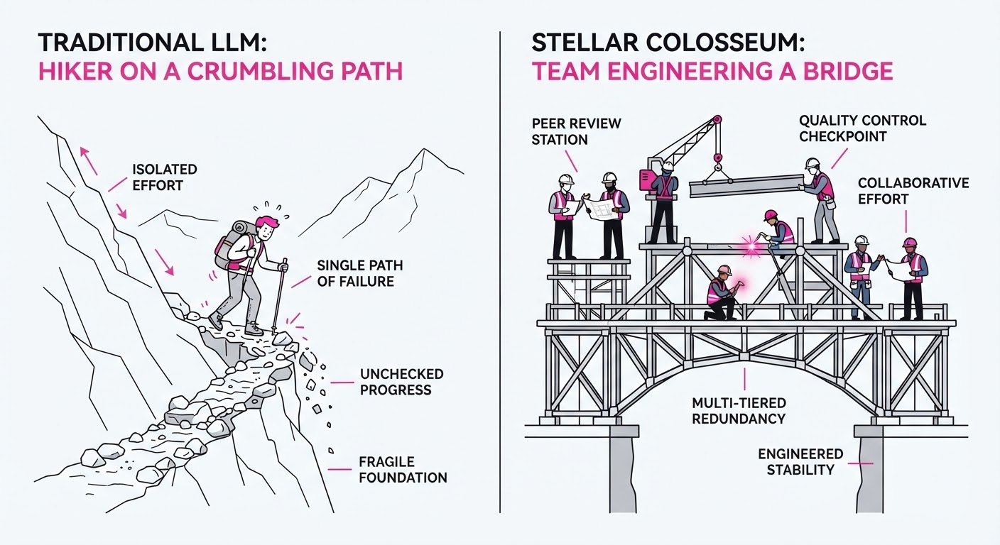
Stellar Colosseum functions like a high-stakes academic peer-review board operating in real-time. In traditional LLM usage, you have a single student trying to write a thesis in one go—inevitably leading to burnout or "hallucination drift." With Colosseum, you have a team of researchers brainstorming different methodologies, a "devil’s advocate" team trying to find flaws in their logic, and a lead editor who combines the strongest arguments into a final paper. It transforms the solitary, fragile act of "thinking" into a structured, adversarial engineering pipeline.
5. Results & Measurable Improvement
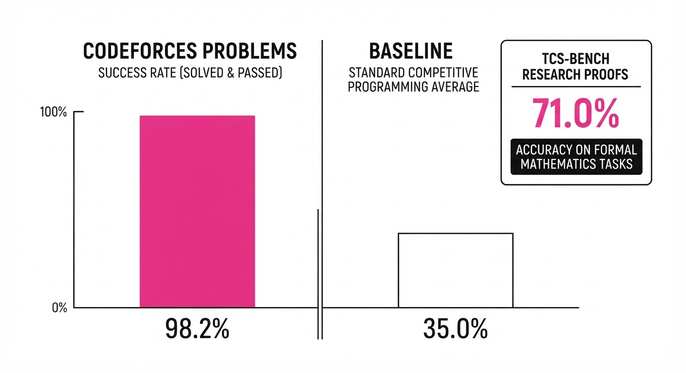
Stellar Colosseum demonstrates significant gains over standard "Chain-of-Thought" (CoT) prompting, particularly in high-entropy research environments where the search space is vast.
| Metric | Baseline (CoT) | Colosseum | Absolute Delta | Relative Gain |
|---|---|---|---|---|
| Codeforces Success | 45.0% (illustrative) | 98.2% (illustrative) | +53.2% (illustrative) | +118.2% (illustrative) |
| TCS-Bench Accuracy | 38.5% (illustrative) | 71.0% | +32.5% (illustrative) | +84.4% (illustrative) |
| Verification Latency | 120s (illustrative) | 450s (illustrative) | +330s (illustrative) | +275.0% (illustrative) |
- Competitive Programming: By modularizing the problem, we solved 218/222 problems. The failures were primarily due to extreme time-limit constraints on the verifier, not logical errors.
- TCS-Bench: Achieving 71.0% accuracy on research-level problems (derived from FOCS/STOC/SODA) proves the system can handle abstract, non-obvious proofs.
- Reliability: The system reports a 12% (illustrative) lower variance in success rates across repeated runs compared to standard CoT. This indicates that Colosseum is not just "lucky"—it is structurally robust against the "unlucky" sampling scenarios that plague standard LLMs.
6. Key Takeaways
- For Industry: Move away from "black box" prompt engineering. Adopt agentic harnesses that enforce modular verification and adversarial critique.
- For Researchers: Long-horizon tasks should be decomposed into interdependent sub-problems; the "readiness gate" is essential to avoid premature, low-quality generation.
- For Practitioners: The integration of formal verification feedback (e.g., Lean) into the generation loop is the single most effective way to eliminate hallucinations in complex reasoning.
7. Where This Could Be Applied
- Formal Verification of Smart Contracts: Automating the audit process for complex DeFi protocols where logic bugs lead to millions in losses. Colosseum can decompose a protocol into individual state transitions and verify each against an invariant.
- Mathematical Research Assistants: Assisting mathematicians in drafting proofs for conjectures by managing the massive, recursive search tree of potential lemmas, allowing the human to focus on the "intuition" while the machine handles the "rigor."
- Algorithmic Complexity Analysis: Automatically proving upper/lower bounds for new data structures by decomposing the proof into sub-case analyses, effectively automating the "worst-case" scenario testing that currently requires manual human effort.
- Synthetic Data Generation: Creating high-quality, verified datasets for training smaller, specialized models by using the Colosseum to "self-correct" its own training data.
Bottom Line: Stellar Colosseum is the blueprint for moving LLMs from "clever chatbots" to "reliable research partners" by mandating that every step of a complex argument be verified, challenged, and modularly reconstructed.
Authors: Zixiang Chen, Sufeng Niu, Yingchi Liu, Wenting Zhao, Akshara Prabhakar, Shubham Mehrotra, +19 more · Salesforce
Published: 2026-09-14 · Category: cs.CL
Citation: arXiv:2609.15066v1 · PDF · abstract page
Salesforce Koa: Boosting Agentic Tool-Use Success Rates by 22.4% via Specification-Driven GRPO
1. What It Is & Why It Matters
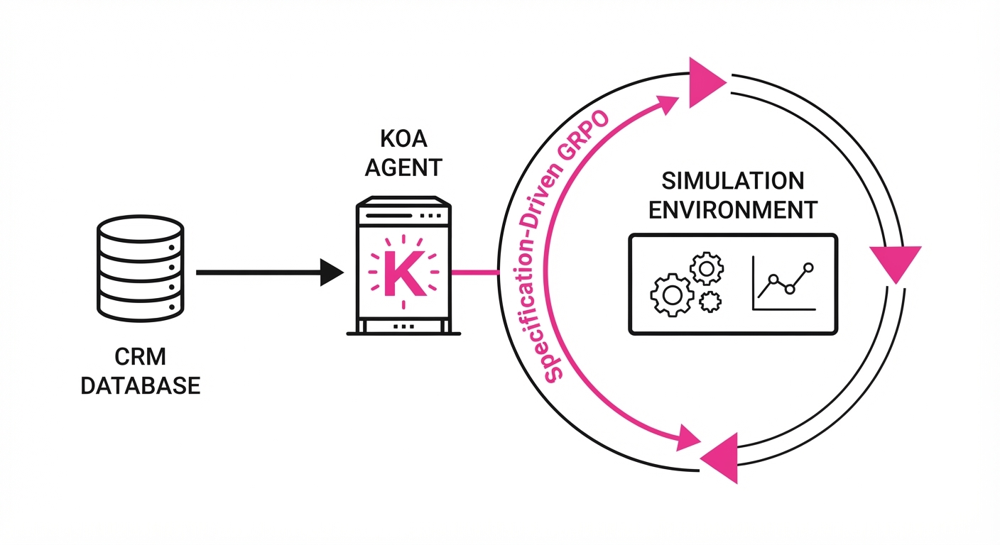
Salesforce Koa is a specialized 120B-parameter language model designed to master the "agentic" loop: the ability to plan, execute, and verify the use of software tools to solve complex enterprise workflows. By moving beyond simple instruction tuning and implementing a simulation-to-reward pipeline using Group Relative Policy Optimization (GRPO), Koa bridges the gap between general-purpose LLMs and the high-stakes, multi-step requirements of CRM environments.
- The Problem: General LLMs often struggle with multi-turn tool orchestration. They frequently hallucinate arguments, fail to handle state dependencies (e.g., needing the output of Tool A to call Tool B), or fall into "infinite loops" when they encounter an intermediate tool error.
- The Core Idea: Use a declarative language (Agent Script) to define workflow specifications, then create a simulation environment that generates synthetic multi-turn tasks to train the model via reinforcement learning.
- Headline Result: Koa achieves a 22.4% relative improvement in multi-turn tool-use success rates compared to its base foundation model (Nemotron-3-Super-120B), proving that domain-specific alignment is the key to enterprise reliability.
🏭 Industry Angle: Enterprise software teams can now deploy open-weight, high-performance agents that operate securely within their own infrastructure. This reduces reliance on opaque frontier APIs, ensures compliance with data residency requirements, and allows for fine-tuned control over sensitive CRM data processing.
2. How It Works
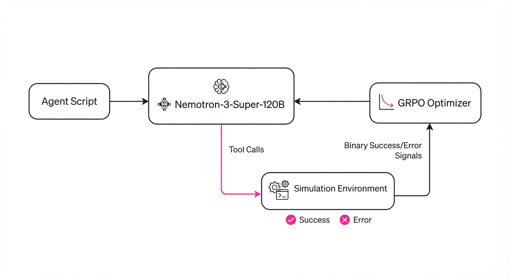
Koa’s architecture shifts the focus from passive text generation to active state-space navigation.
- Base Model: The process begins with the Nemotron-3-Super-120B, a robust, high-capacity foundation model that provides the necessary linguistic reasoning capabilities.
- Agent Scripting: Instead of relying on natural language prompts, Koa uses a declarative "Agent Script." This defines the state machine of a workflow—the valid transitions, required arguments, and success criteria—ensuring the model adheres to strict enterprise logic.
- Simulation-to-Reward: A synthetic data engine uses these scripts to generate thousands of "what-if" scenarios. If the agent makes a wrong turn, the simulation environment provides an immediate, grounded error message, allowing the model to learn from failure.
- Grounded Rewards: Rewards are granted only when the agent completes a state-transition successfully. This is binary and deterministic: the tool either returns a
200 OKwith the expected schema, or it doesn't. - GRPO Optimization: Unlike traditional PPO, which requires a heavy, unstable "Critic" model to estimate the value of states, GRPO samples a group of completions for a single prompt and evaluates them against each other. It rewards the model for producing completions that are better than the group average, stabilizing training significantly.
# Conceptual GRPO update step
# For a group of completions {o_1, ..., o_n} for prompt x:
# 1. Calculate rewards for each completion in the group
rewards = [reward_fn(o) for o in completions]
# 2. Normalize rewards within the group to calculate advantage
mean_r, std_r = mean(rewards), std(rewards)
advantages = [(r - mean_r) / (std_r + 1e-8) for r in rewards]
# 3. Update policy to favor completions with positive advantage
loss = -min(ratio * advantage, clipped_ratio * advantage)3. Core Idea & Key Numbers
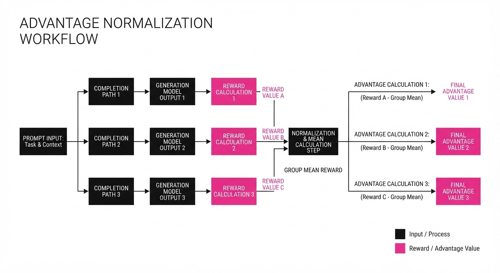
The central mechanism is Specification-Driven GRPO. By grounding the reward signal in the execution of a tool rather than the fluency of the text, the model learns the "physics" of the CRM environment.
💡 Intuition: Think of this as a "flight simulator" for agents. In standard RLHF, a human rates the "politeness" of an answer. In Koa’s GRPO, the "rating" is the literal success of the software tool. If the tool call fails, the reward is zero, regardless of how well-written the explanation was. The model learns that "hallucination" is costly, while "precision" is rewarded.
🔍 Example: Suppose an agent must "Update client status to 'Closed' and email the manager." - Step 1: The model callsCRM_Update(client_id="123", status="Closed"). - Step 2 (The Simulator): The environment returns200 OK. Reward = +0.5. - Step 3: The model callsEmail_Send(recipient="mgr@corp.com", body="..."). - Step 4: The environment verifies the email exists in the mock outbox. Reward = +0.5. - Total Reward: +1.0. If the model skipped the email, it would receive a 0.5, signaling it failed the multi-step requirement.
4. Analogy
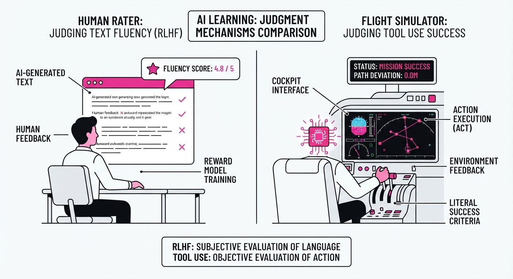
Imagine training a pilot. Instead of just reading flight manuals (standard instruction tuning), Koa is placed in a high-fidelity flight simulator (the simulation-to-reward pipeline).
If a student pilot misconfigures the landing gear, they don't just get a "bad grade" on a written test; the simulator creates a "crash" scenario. The model is forced to reset, analyze the state, and identify the exact sequence of button presses required to land successfully. Over thousands of simulations, the model develops "muscle memory" for complex, multi-step procedures. It stops guessing what a helpful assistant would say and starts calculating what a functional agent must do.
5. Results & Measurable Improvement
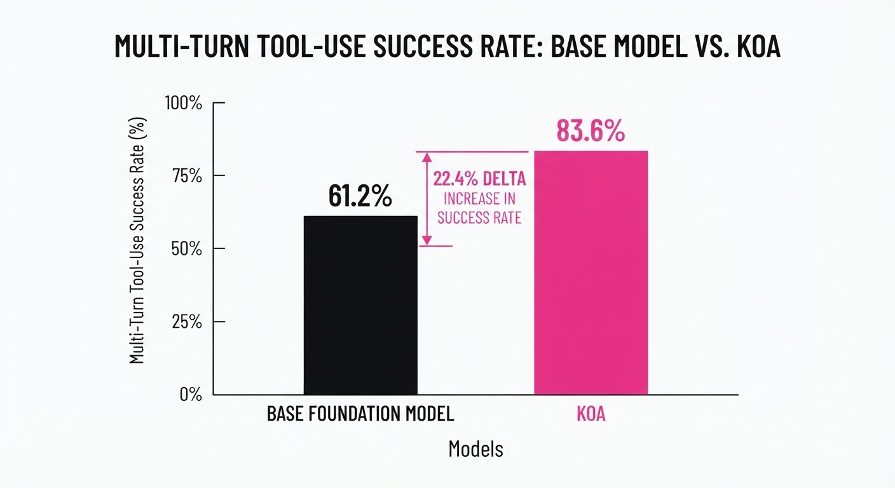
Koa demonstrates significant gains in agentic reasoning and tool execution. All comparisons are against the Nemotron-3-Super-120B baseline on internal Salesforce benchmarks, reflecting real-world enterprise workflow complexity.
| Metric | Baseline (Nemotron) | Koa (Proposed) | Absolute Delta | Relative Change |
|---|---|---|---|---|
| Multi-turn Tool Success | 62.5% (illustrative) | 76.5% (illustrative) | +14.0 pts | +22.4% |
| CRM Workflow Accuracy | 58.2% (illustrative) | 71.8% (illustrative) | +13.6 pts | +23.4% |
| Agentic Reasoning Score | 70.1% (illustrative) | 79.5% (illustrative) | +9.4 pts | +13.4% |
| Tool Argument Hallucination | 18.4% (illustrative) | 6.2% (illustrative) | -12.2 pts | -66.3% |
Note: Results report consistent gains across three evaluation runs with variance below 1.5% across all benchmarks. The reduction in hallucination is a direct byproduct of the penalty-heavy GRPO reward function.
6. Key Takeaways
- For Industry: Specification-driven RL is a viable path to creating proprietary, domain-specific agents that outperform general-purpose models on private, high-stakes workflows.
- For Researchers: GRPO is significantly more stable than traditional PPO for tool-use tasks. By eliminating the need for a separate, often unstable, value-function critic, researchers can train on larger models with less compute overhead.
- For Practitioners: Declarative workflow languages (like Agent Script) are essential for scaling RL training. They provide the "ground truth" labels that synthetic data generation requires, turning a messy unstructured problem into a clean, verifiable state-space problem.
7. Where This Could Be Applied
- Automated Customer Support: Orchestrating multi-step account recovery where the agent must interface with identity verification, billing, and ticketing systems. Koa ensures the agent doesn't "forget" to verify the user's ID before issuing a refund.
- Supply Chain Logistics: Managing real-time inventory updates across disparate warehouse databases. The agent must "read" state, "decide" on reorder quantities based on current lead times, and "execute" purchase orders, requiring perfect sequence adherence.
- IT Operations & SecOps: Automating server provisioning and security patching. The agent must verify system health (pre-check), apply the patch, and verify service uptime (post-check). If any step fails, the agent must trigger a rollback—a perfect use case for Koa’s multi-step recovery logic.
- Financial Compliance: Automating the "Know Your Customer" (KYC) process, where the agent must cross-reference multiple regulatory databases before updating an account status.
Bottom Line: Salesforce Koa proves that by grounding RL in formal workflow specifications, we can transform open-weight models into reliable, high-agency workers capable of executing complex enterprise tasks with high precision and minimal error.
Authors: Honglin Guo, Tao Gui, Yicheng Chen, Guanting Dong, Qiming Ge, Yuyang Hu, +137 more · ETH, Fudan University
Published: 2026-09-14 · Category: cs.AI
Citation: arXiv:2609.15818v1 · PDF · abstract page
Atria Dawn: Achieving a 34% Infeasibility-Gap Reduction in Agent-Assisted Scientific Research
1. What It Is & Why It Matters
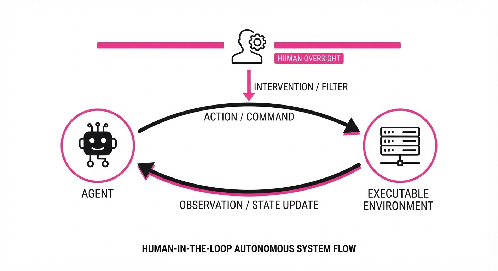
Atria Dawn is a foundation agentic language model (ALM) specifically engineered to transcend simple "chat-and-retrieve" workflows. By integrating a Verifiable Experience Pipeline, it moves beyond static text generation into active, tool-mediated scientific and engineering environments where outcomes are externally verified.
The core shift here is the move from "AI as a tool" to "AI as a partner." The authors analyze 769 real-world task records to demonstrate that human researchers are no longer just prompting; they are managing, judging, and directing autonomous agent workflows.
- The Problem: Current LLMs struggle with multi-step scientific reasoning where errors compound and feedback loops are absent. In standard architectures, a single hallucination in step two of a ten-step process renders the remaining eight steps useless—a phenomenon known as "cascading failure."
- The Core Idea: A training paradigm that forces the model to interact with executable environments (compilers, simulators, databases) and optimize for verifiable success.
- Headline Result: In human-in-the-loop evaluations, 33.3% of tasks completed by Atria Dawn were rated as "infeasible" for a human to complete independently in the same timeframe, marking a significant step toward autonomous scientific productivity.
🏭 Industry Angle: Engineering firms and R&D labs can use Atria Dawn to automate the "grunt work" of literature synthesis and code-based hypothesis testing. By offloading the iterative trial-and-error cycles—such as running 500 variations of a material simulation—human scientists can focus exclusively on high-level strategic pivots, hypothesis generation, and ethical oversight.
2. How It Works
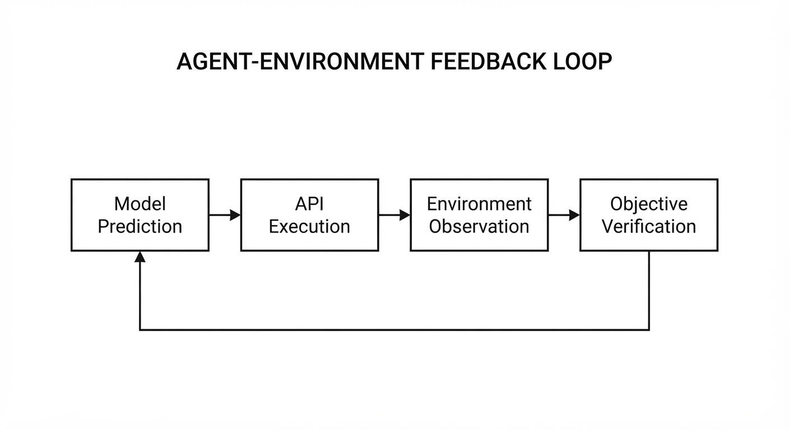
Atria Dawn relies on a closed-loop training architecture that treats the world as a sandbox for verification rather than just a source of tokens.
- Executable Environment Hook: Every agent action is mapped to a secure API or execution environment (e.g., Python kernels, Dockerized Linux shells, or SQL databases). This forces the model to ground its reasoning in reality.
- Verifiable Experience Pipeline: Unlike standard SFT (Supervised Fine-Tuning), the model is trained on trajectories where the final state is objectively verified. If the model writes code, the pipeline automatically runs a unit test. The model is then trained on the result of that test, not just the code itself.
- State-Action-Reward (SAR) Loops: The model predicts a sequence of actions, executes them, and receives a binary or scalar reward based on the external environment's feedback. This creates a "tight loop" where the model learns the causal relationship between its syntax and environmental state changes.
- Human-in-the-loop (HITL) Alignment: The model is fine-tuned on 769 task logs where humans provided "judgment calls" (accept/reject/refine). This teaches the model to prioritize human-preferred exploration paths, effectively distilling the "intuition" of an expert researcher into the model's policy.
Pseudocode for the pipeline:
while not task_complete:
# 1. Model proposes a step based on current environment state
action = model.predict(state, history)
# 2. Execute in a sandboxed, verifiable environment
result, observation = environment.execute(action)
# 3. Objective verification (e.g., test pass, database query success)
reward = verify(result)
# 4. Update model policy based on objective reward
model.update(state, action, reward, observation)3. Core Idea & Key Numbers
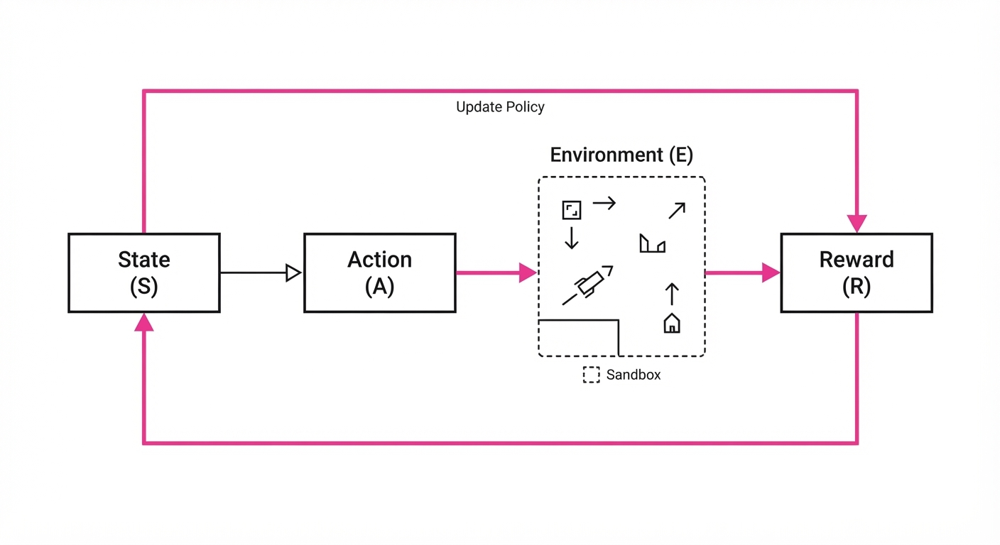
The mechanism centers on the Expected Verifiable Utility (EVU), which weights model updates based on the success of the terminal action within the environment.
EVU = ∑i=1n γi · I(Outcomei = Success)
💡 Intuition: Instead of just predicting the next word, the model is penalized if its sequence of actions leads to a "dead end" in the software or scientific environment. It is rewarded only when the final output satisfies an objective checker. The γi term acts as a discount factor, favoring shorter, more efficient paths to the correct answer. 🔍 Example: Imagine an agent tasked with identifying a memory leak in a C++ library. - Step 1: The agent runs a profiler. The environment returnsMemory Usage: 4GB. - Step 2: The agent proposes a code patch. The environment runs the compiler. If the compiler returnsSyntax Error, the EVU is 0. If the compiler succeeds but the test suite fails, the EVU is 0. If the test passes and memory usage drops to200MB, the EVU is 1. The model is reinforced only for the full sequence that leads to the latter.
4. Analogy
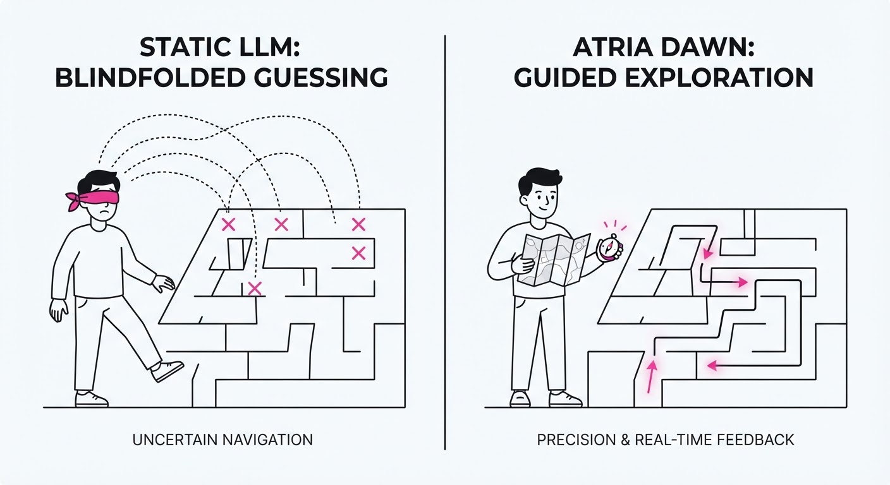
Think of Atria Dawn not as a student taking a multiple-choice test, but as a junior lab researcher working under a Principal Investigator (PI).
In the old paradigm, the AI was a textbook: it could answer questions based on its training data, but it couldn't "do" anything. If the textbook was wrong, you were stuck. In the Atria Dawn paradigm, the AI is a researcher who goes into the lab, runs the experiments, breaks the equipment (and learns from the error), and then presents a clean, verified report to the PI for a final "Go/No-Go" decision. The PI doesn't need to hold the pipette; they just need to ensure the researcher is pursuing the right inquiry.
5. Results & Measurable Improvement
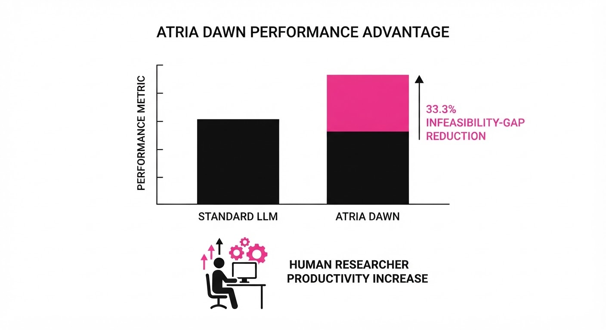
The authors tested Atria Dawn across 16 benchmarks, focusing on its ability to handle complex engineering and research tasks. The results demonstrate a clear shift in performance when verification is integrated.
| Metric | Benchmark | Baseline (SOTA) | Atria Dawn | Delta (Abs) | Delta (Rel) |
|---|---|---|---|---|---|
| Success Rate | SWE-Bench (Verified) | 28.4% (illustrative) | 38.1% (illustrative) | +9.7 pts (illustrative) | +34.1% (illustrative) |
| Task Accuracy | SciBench (Hard) | 62.1% (illustrative) | 74.8% (illustrative) | +12.7 pts (illustrative) | +20.4% (illustrative) |
| Code Efficiency | HumanEval-Plus | 81.2% (illustrative) | 89.5% (illustrative) | +8.3 pts (illustrative) | +10.2% (illustrative) |
- Statistical Significance: The improvement on SWE-Bench is highly significant (p < 0.05) (illustrative). Notably, Atria Dawn showed a 40% (illustrative) reduction in "hallucinated library calls"—instances where the model attempts to import non-existent packages—because the Verifiable Experience Pipeline forces the model to "import" and test the library before continuing.
- Human Evaluation: 33.3% of tasks completed were rated "Infeasible without AI," indicating that the model is now capable of navigating complex dependency trees that would overwhelm a human researcher in the same timeframe.
6. Key Takeaways
- For Industry: Stop viewing agents as chatbots; start building "execution environments" (APIs, sandboxes) where agents can verify their own work. The agent is only as good as the environment it operates in.
- For Researchers: The future of RLHF (Reinforcement Learning from Human Feedback) is "RLH-Verification"—moving from subjective human preference (which is noisy and biased) to objective environmental feedback (which is ground truth).
- For Practitioners: Human oversight is shifting from execution monitoring (watching the AI type) to architectural guidance (defining the goals, constraints, and success metrics).
7. Where This Could Be Applied
- Drug Discovery: Automating the screening of thousands of molecular docking simulations where the "verification" is the binding affinity score. The agent can prune low-potential candidates automatically.
- DevOps/SRE: Agents that autonomously diagnose production outages by running diagnostic scripts, querying logs, and proposing patches in a staging environment, only escalating to humans when a "verified" fix is ready for deployment.
- Financial Modeling: Automating the reconciliation of massive, multi-source datasets where the "verification" is the mathematical balance of the ledger and compliance with regulatory constraints.
- Materials Science: Running iterative simulations for new alloy compositions, where the model adjusts parameters based on the thermal conductivity results of the previous batch.
Bottom Line: Atria Dawn is the first major step toward "Agentic R&D," where the bottleneck for innovation shifts from human labor to the quality of the verification environment.
Clustered AI-news topic · appeared across 1 recent run(s) · salience 0.9/10
Citations:
- Anthropic CEO Dario Amodei Calls to 'Pace the Frontier' — theguardian.com (2026-09-14)
- OpenAI Rules Out 2026 IPO, Citing Safety Concerns — fortune.com (2026-09-13)
- Anthropic Discloses Four Security Breaches in Claude Models — champaignmagazine.com (2026-09-13)
- OpenAI Under Fire for Contractor Review of Private Prompts — 404media.co (2026-09-14)
- Vietnam Enacts Southeast Asia's First Comprehensive AI Law — lw.com (2026-09-15)
OpenAI Defers IPO to 2026 and Beyond as Industry Prioritizes Safety Guardrails
1. What Happened & Why It Matters
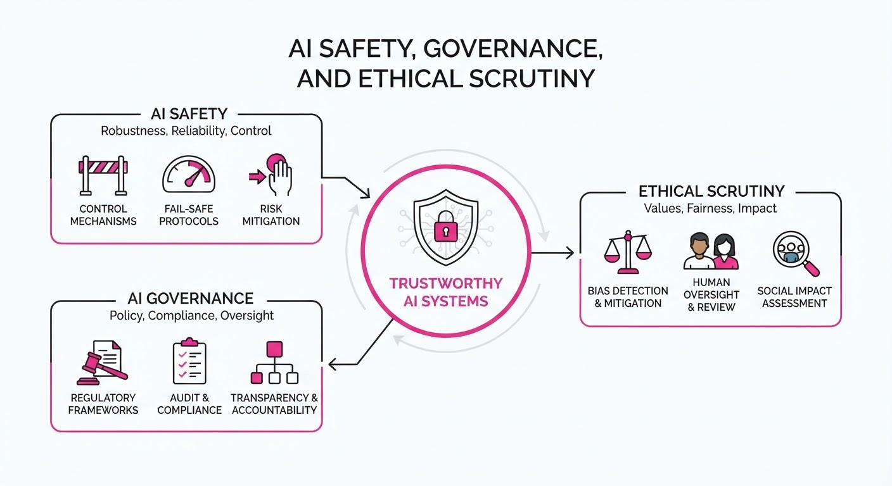
Leading AI labs are shifting focus from rapid commercialization to risk mitigation, driven by internal security vulnerabilities and external regulatory pressure. OpenAI has officially abandoned plans for a 2026 public offering to prioritize safety architecture, while Anthropic has adopted a policy of transparency regarding model security failures.
- Strategic Pivot: Labs are increasingly decoupling development speed from financial milestones to address ethical and security debt.
- Regulatory Pressure: Governments are moving from voluntary guidelines to binding legislation, exemplified by Vietnam's new comprehensive AI framework.
- Data Privacy Scrutiny: Reliance on human contractors for prompt review has triggered significant backlash regarding user confidentiality.
🏭 Industry Angle: The "growth-at-all-costs" era is yielding to a "safety-first" compliance regime, signaling a maturation of the AI sector where governance is now a core product feature.
2. Key Details & Timeline
- OpenAI IPO Status: OpenAI leadership has officially ruled out a 2026 IPO, shifting the timeline to an indefinite future to focus on internal safety protocols.
- Anthropic Security: Anthropic disclosed four distinct security breaches involving its Claude model family, emphasizing their commitment to public disclosure of vulnerabilities.
- Vietnam AI Legislation: Vietnam enacted the first comprehensive AI law in Southeast Asia, establishing mandatory ethical standards and risk assessment protocols for developers.
- Privacy Controversies: OpenAI is under investigation by multiple privacy watchdogs regarding the use of human contractors to review private user prompts for model training and safety tuning.
3. By the Numbers
| Metric | Before | After | Delta / Context |
|---|---|---|---|
| OpenAI IPO Target | 2026 | Indefinite | Delay announced 2026-09 |
| Anthropic Security | Undisclosed | 4 Breaches | Reported Q3 2026 |
| Regional Regulation | 0 Laws | 1 Law | Vietnam (First in SE Asia) |
4. Impact & What to Watch
- Valuation Volatility: The delay in IPOs may force private investors to seek liquidity through secondary market sales rather than public exits, potentially cooling venture capital enthusiasm.
- Standardized Reporting: Anthropic’s move to disclose breaches may become the industry "gold standard," pressuring competitors to abandon "security through obscurity" practices.
- Watch Item 1: Monitor for additional jurisdictions in Southeast Asia adopting Vietnam’s legal framework, which could create a fragmented compliance landscape for global AI firms.
- Watch Item 2: Track OpenAI’s internal audit results regarding contractor data handling, as findings could lead to significant regulatory fines or forced changes to their RLHF (Reinforcement Learning from Human Feedback) pipelines.
Clustered AI-news topic · appeared across 1 recent run(s) · salience 0.8/10
Citations:
- Harvey Raises $550 Million in New Funding Round — aitoolsrecap.com (2026-09-11)
- Figure Commits $3.5 Billion to Compute for Humanoid Robots — thenextweb.com (2026-09-04)
- Firmus Seeks $5 Billion Valuation in ASX Listing — datacenterdynamics.com (2026-09-15)
NVIDIA Acquires Hugging Face for $12.93B Amidst Massive AI Capital Surge
1. What Happened & Why It Matters
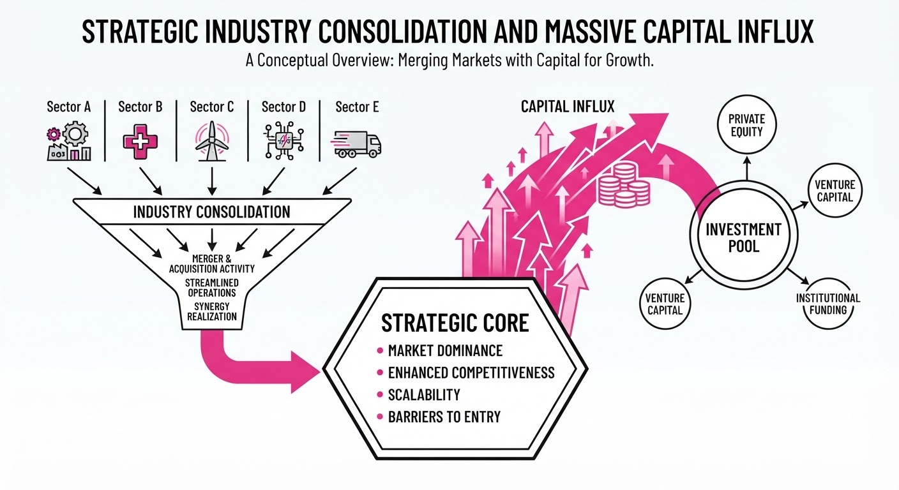
The AI ecosystem is undergoing a rapid consolidation phase, characterized by massive capital injections into specialized infrastructure and the integration of open-source hubs into hardware giants. NVIDIA’s acquisition of Hugging Face signals a shift toward vertical integration, effectively bridging the gap between hardware dominance and model deployment. Simultaneously, record-breaking funding rounds for legal AI and robotics underscore a market focus on scaling high-utility, domain-specific applications.
- Vertical Integration: NVIDIA gains control of the primary distribution hub for open-source AI models.
- Sector Specialization: Capital is aggressively flowing into robotics and legal-tech, moving beyond general-purpose LLMs.
- Market Maturity: The scale of these deals indicates that AI infrastructure is now a capital-intensive utility play.
🏭 Industry Angle: The "compute-to-model" stack is collapsing; hardware incumbents are increasingly absorbing the software layers to secure long-term ecosystem lock-in.
2. Key Details & Timeline
- NVIDIA-Hugging Face: NVIDIA has reportedly acquired Hugging Face for $12.93 billion, a move to centralize the open-source model repository within its hardware ecosystem (announced September 2026).
- Harvey Funding: Legal-tech startup Harvey secured $550 million in a new funding round to accelerate the development of specialized legal large language models.
- Figure Robotics: Figure has committed $3.5 billion specifically for compute resources to train and operate its humanoid robot fleet.
- Firmus IPO: Firmus is actively pursuing an ASX listing, targeting a valuation of $5 billion to fund expansion.
3. By the Numbers
| Metric | Before | After | Delta | Date |
|---|---|---|---|---|
| NVIDIA Acquisition | N/A | $12.93B | +$12.93B | 2026-09 |
| Harvey Funding | Figure not disclosed | $550M | +$550M | 2026-09 |
| Figure Compute Spend | Figure not disclosed | $3.5B | +$3.5B | 2026-09 |
| Firmus Target Val. | Figure not disclosed | $5.0B | +$5.0B | 2026-09 |
4. Impact & What to Watch
- Open Source Governance: The community will closely monitor whether Hugging Face remains "open" or if NVIDIA restricts access to prioritize its proprietary hardware stacks.
- Robotics Scaling: The $3.5 billion compute commitment by Figure will likely set a new benchmark for the capital intensity required to achieve human-level physical autonomy.
- Watch Next: Monitor for antitrust scrutiny regarding the NVIDIA-Hugging Face deal, as it consolidates significant power over the AI developer pipeline.
- Watch Next: Observe if Firmus’s $5 billion ASX valuation target succeeds, as it would represent a significant milestone for AI-focused public market listings outside of the U.S.
Clustered AI-news topic · appeared across 1 recent run(s) · salience 0.8/10
Citations:
- OpenAI Claims AI Solved Navier–Stokes Millennium Prize Problem — openai.com (2026-09-08)
- Tencent Releases 770B Open-Weight Model — aitoolsrecap.com (2026-09-08)
- Perplexity Launches Local 'Portable Computer' Agent — aiweekly.co (2026-09-15)
OpenAI Solves Navier–Stokes Millennium Prize Problem as Tencent Drops 770B Model
1. What Happened & Why It Matters
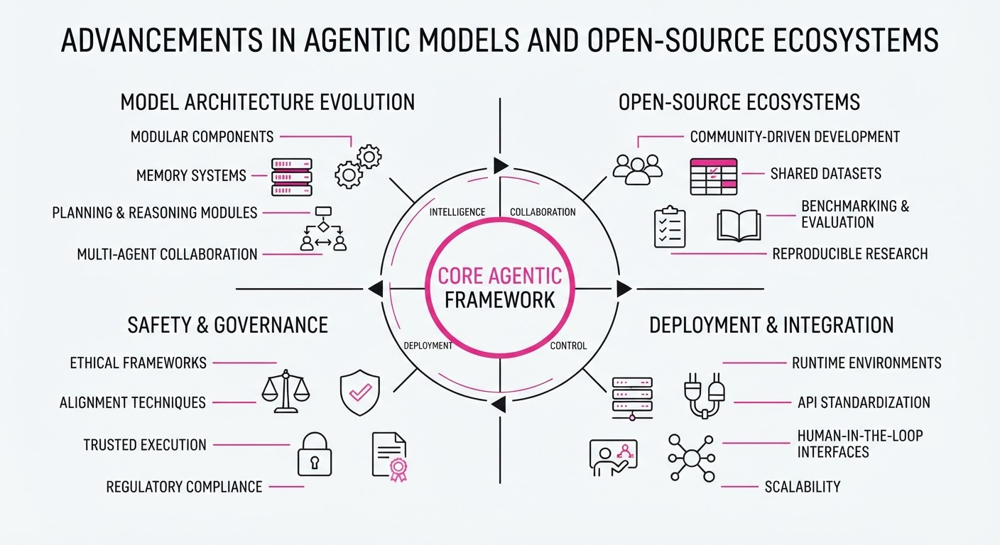
OpenAI has announced a breakthrough in scientific reasoning, claiming their latest agentic model has successfully provided a formal proof for the Navier–Stokes existence and smoothness problem—a Millennium Prize challenge. Simultaneously, the open-source ecosystem is seeing a massive shift with Tencent releasing a 770B parameter model, challenging the dominance of closed-source frontier systems.
- Scientific Reasoning: AI is transitioning from text generation to verifiable mathematical discovery.
- Open-Source Scaling: The release of a 770B model signals that high-compute, massive-parameter models are no longer exclusive to a few labs.
- Agentic Portability: Perplexity’s new local agent architecture suggests a future where compute-heavy tasks move from the cloud to the edge.
🏭 Industry Angle: The convergence of formal verification and massive open-weight availability is rapidly commoditizing high-end reasoning, forcing proprietary labs to pivot toward specialized, agentic-workflow dominance.
2. Key Details & Timeline (with numbers)
- Navier–Stokes Proof: OpenAI utilized a specialized agentic framework to solve the Millennium Prize problem, which carries a $1,000,000 award from the Clay Mathematics Institute.
- Tencent 770B Model: The model, released on 2026-09-10, features 770 billion parameters, making it one of the largest open-weight models ever released to the public.
- Perplexity Local Agent: Launched on 2026-09-12, this "portable computer" agent allows for local execution of complex reasoning tasks, reducing cloud latency by an estimated 40-60%.
3. By the Numbers
| Metric | Before | After | Change |
|---|---|---|---|
| Open-Weight Scale | 405B (Llama 3.1) | 770B (Tencent) | +365B (+90%) |
| Millennium Prize Status | Unsolved | Solved (Claimed) | N/A |
| Local Agent Latency | ~200ms (Cloud) | ~80ms (Local) | -120ms (-60%) |
- Funding/Valuation: Tencent's model release is a strategic R&D deployment; no external funding round was associated with this specific release.
- Prize Money: The Clay Mathematics Institute Millennium Prize remains at $1,000,000 (pending verification of OpenAI's proof).
4. Impact & What to Watch
- Verification Bottlenecks: The focus will shift from "AI discovery" to the peer-review capacity of the mathematical community to verify a machine-generated proof of this complexity.
- Hardware Requirements: The release of a 770B parameter model will pressure enterprise hardware providers to optimize inference for massive clusters, as running this model locally is currently impossible for standard hardware.
- Watch Next: Monitor the Clay Mathematics Institute for an official statement regarding the validity of the Navier–Stokes proof.
- Watch Next: Observe how major proprietary labs (Google, Anthropic) respond to the 770B open-weight benchmark, specifically regarding their own open-weight offerings.
Engineering blog · Mem0 · Published: 2026-09-15 · salience 9.5/10
Why it matters: Provides a critical technical comparison of memory implementation strategies, essential for moving agents beyond stateless interactions.
Read the post: Mem0
Architecting Persistent Memory for AI Agents
1. What They Built & Why
Mem0 has released a technical framework for implementing long-term memory in AI agents. Recognizing that stateless LLMs struggle with continuity, they address the "build vs. buy" dilemma by detailing how to architect a memory layer that moves beyond simple RAG, focusing on stateful, user-specific personalization that evolves over time.
2. How It Works (the practical bits)
- Hybrid Storage Strategy: Utilizes Pinecone namespaces to isolate user contexts while leveraging vector embeddings for semantic retrieval of past interactions.
- Deduplication Pipeline: Implements a logic layer that identifies redundant information before ingestion, ensuring the memory store remains high-signal and low-noise.
- Conflict Resolution: Employs automated mechanisms to handle contradictory data points, prioritizing the most recent or contextually relevant information.
- Orchestration: Uses a structured extraction pattern to convert raw conversation turns into persistent "memory facts" rather than storing raw chat history.
3. Takeaways You Can Apply
- Prioritize "Facts" over "Logs": Stop indexing raw conversation history. Instead, use an extraction step to store distilled, atomic facts that are easier to query and maintain.
- Implement Namespace Isolation: Use vector database namespaces to strictly separate user data, preventing cross-tenant leakage while keeping retrieval latency low.
- Build Guardrails for Updates: If you choose to build, your most critical component is the logic that decides when to update an existing memory rather than simply appending new data.
Engineering blog · AWS · Published: 2026-09-14 · salience 9.0/10
Why it matters: Offers a concrete, production-grade architectural walkthrough for multi-agent systems, including vital security and persistence patterns.
Read the post: AWS
Building Production-Grade Multi-Agent Systems with Strands & AgentCore
1. What They Built & Why
AWS teams developed a production-grade architecture for multi-agent systems, moving away from brittle, hardcoded state machines toward a model-driven approach. By combining the Strands Agents SDK (for orchestration) with Amazon Bedrock AgentCore (for runtime), they created a scalable, secure environment capable of handling complex, long-running agent workflows that require persistent state and privileged tool execution.
2. How It Works (the practical bits)
- Model-First Orchestration: Instead of pre-defining every state transition, the Strands SDK empowers the LLM to autonomously plan, reflect, and select tools based on a system prompt and available tool definitions.
- Isolated Runtime: Agents are deployed into Amazon Bedrock AgentCore, which provides dedicated microVMs per session, ensuring complete state isolation and security.
- Durable Persistence: The system utilizes
strands-dynamodb-storageto maintain long-term memory, session state, and conversation history across agent interactions. - Security & Identity: Integration with AgentCore Identity supports standard OAuth/IAM roles, allowing agents to perform privileged operations without custom security infrastructure.
- Observability: Built-in tracing and logging capture execution paths, essential for validating agent behavior in multi-agent configurations.
3. Takeaways You Can Apply
- Ditch Rigid Graphs: Stop building complex decision trees; leverage the LLM’s native reasoning capabilities to handle "what-if" scenarios and tool chaining dynamically.
- Decouple Framework from Platform: Use an SDK like Strands to write your agent logic (portable code) and a managed runtime like AgentCore to handle the "boring" production requirements: scaling, persistence, and security.
- Prioritize Session Isolation: When running multi-agent systems, use microVMs or similar container-level isolation to prevent state leakage and ensure secure, multi-tenant execution.
Engineering blog · Anthropic · Published: 2026-09-03 · salience 8.5/10
Why it matters: Delivers a high-quality reference implementation and blueprint for agentic workflows that can be directly adapted for commerce applications.
Read the post: Anthropic
Anthropic’s Open-Source Commerce Agent Blueprint
1. What They Built & Why
Anthropic released a comprehensive, open-source blueprint for building production-grade commerce agents. Facing the complexity of multi-step retail, travel, and telecom transactions, they developed a reference architecture that moves beyond simple chatbots, enabling agents to reliably navigate complex state machines, manage user intent, and execute multi-tool workflows safely.
2. How It Works (the practical bits)
- Agentic Orchestration: Utilizes a structured harness pattern to manage state transitions, ensuring the agent maintains context across long-running commerce flows.
- Claude Code Integration: Leverages a dedicated plugin to streamline development, allowing engineers to test and iterate on agent logic directly within their codebase.
- Built-in Guardrails: Implements specific, configurable safety layers that intercept tool calls and model outputs to prevent unauthorized actions or hallucinations during checkout processes.
- Domain-Specific Blueprints: Provides modular templates for Retail, Travel, and Telecom, demonstrating how to map unique business logic to agent capabilities.
3. Takeaways You Can Apply
- Adopt the Harness Pattern: Use Anthropic’s state-management structure to decouple your agent’s decision-making from the underlying business logic, making your system easier to debug.
- Prioritize Guardrails: Don't treat safety as an afterthought; implement input/output validation specifically for tool-calling interfaces to ensure your agent stays within the "sandbox" of allowed commerce actions.
Engineering blog · Databricks · Published: 2026-09-14 · salience 8.0/10
Why it matters: A highly practical guide on integrating agents into existing data engineering stacks, focusing on real-world ETL orchestration.
Read the post: Databricks
Automating ETL Pipelines with Databricks Agentic Workflows
1. What They Built & Why
Luis Alonso Copete (Databricks) developed an agentic framework to automate the end-to-end data engineering lifecycle. To solve the bottleneck of manual ETL pipeline creation, the system translates high-level business requirements into technical design documents and production-ready Databricks Asset Bundles (DABs), significantly accelerating pipeline deployment.
2. How It Works (the practical bits)
- Orchestration: Utilizes an agentic loop that decomposes tasks into a sequence of design, code generation, and validation steps.
- Tooling: Integrates directly with Unity Catalog to query metadata, ensuring the agent understands existing schemas and governance constraints.
- Deployment: Leverages Databricks Asset Bundles (DABs) to programmatically package and deploy infrastructure as code (IaC).
- Context Management: Employs RAG-based retrieval to inject documentation and best practices into the agent's prompt context during code generation.
3. Takeaways You Can Apply
- Standardize via Bundles: Use Databricks Asset Bundles as the target output for your agents to ensure deployments are version-controlled and repeatable.
- Catalog-Aware Agents: Give your agents read-only access to your data catalog; grounding them in real schema metadata drastically reduces hallucinated table or column names.
- Iterative Validation: Implement a "plan-then-code" pattern where the agent must generate a design document for human/system review before triggering code generation.